Two squadrons: round 5
Every picture is the real app with demo data; the new part is marked in pink. Each caption starts with whose schedule it is. 142's own app stands in for 149's, its top bar re-lettered "149".
Look at now
- GThe grey line under 149's wave, in its three states, with your three sentences. Drawn as you approved them; nothing to answer unless something reads wrong.
- N1The "3 new ↓" count beside "+ Line", as you chose it. Drawn as you approved it: count, tap, gone.
- N2Should the count count down as you scroll the new lines into view by hand ("3 new" becomes "2 new")? Recommended: yes.
- N3If you tap the count after the blue ring has faded, should the ring play again as the lines come into view? Recommended: yes.
Answered: "all as recommended"
- TThe "142" tag under the mission, lined up, the same on a desktop and a phone.
- J"Join a 149 wave", and round 4's 1, 2, 4a and 6 and round 3's Q2, Q3, R1 and R3, all as recommended.
Next round
- RTThe whole plan red-teamed by Astra, then a second, separate reader: loopholes, what is overlooked, and how every rule (crew rest, OIL, amendments, Insights, the Leave War, the Tracker) works across two schedules. Its findings come to you as round 6.
- POThe Leave War's Post out "Transfer to Sqn", choosing the squadron he moves to, drawn in round 6.
G · The grey line under 149's wave, in its three states
You approved: keep the 149 tag in the wave's title, and one short sentence under it by state.
142's schedule, Edit Schedule, Monday. The 1st wave stands in for 149's wave: 149's VL is hidden (142 only sees its own lines), RU is 142's. The wave's title wears 149's grey tag, so the sentence no longer says whose wave it is. The day's own DRAFT or ORIG at the top right is real, and it is the only "published" mark on 142's day. The issues bar and the Common Programme, between the day and the wave, are hidden to keep the picture short.
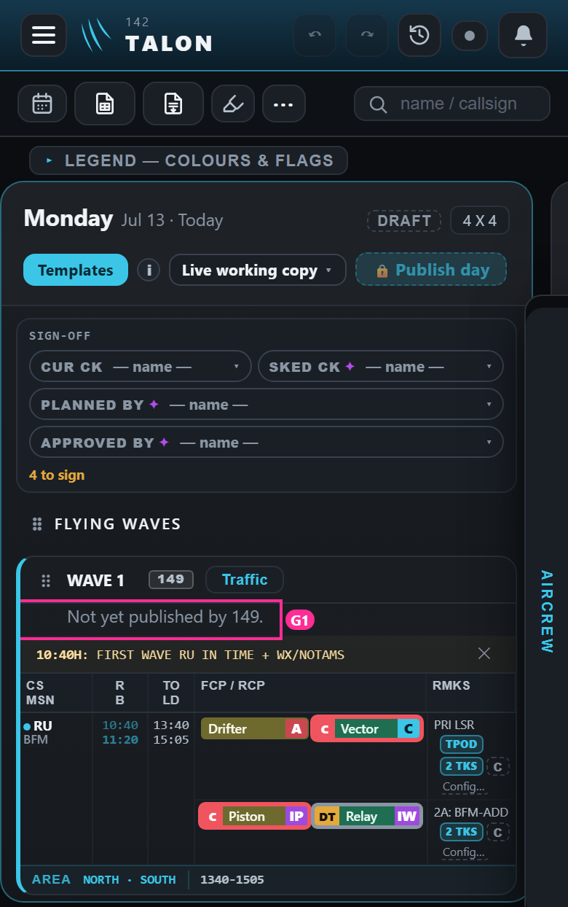
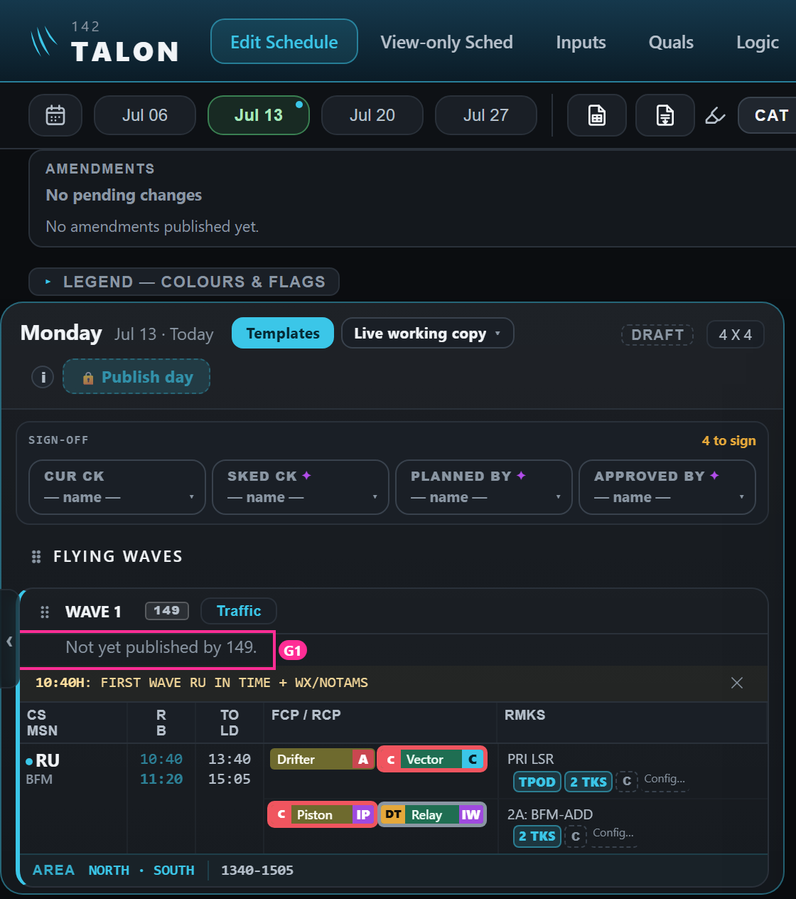

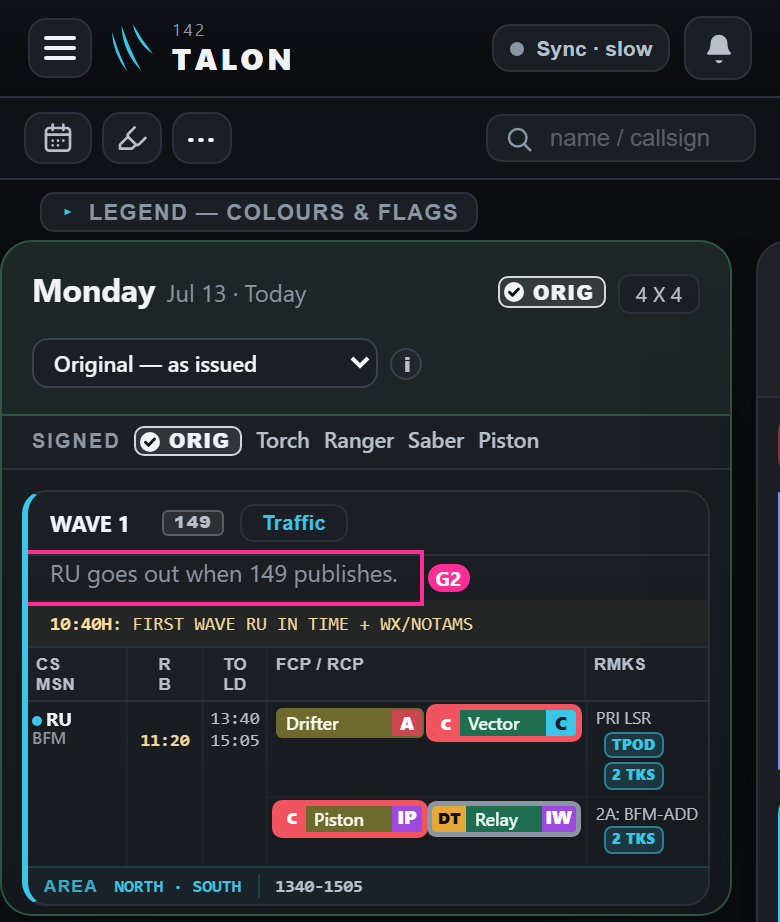

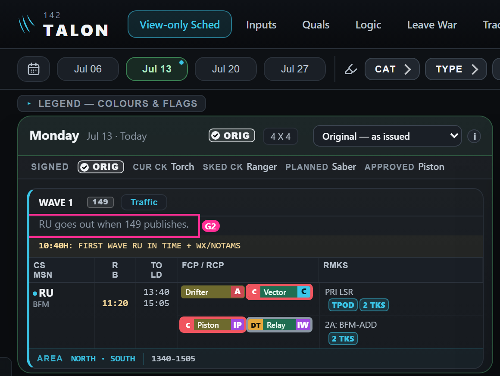
With two 142 lines in 149's wave it reads "RU and VL go out when 149 publishes."
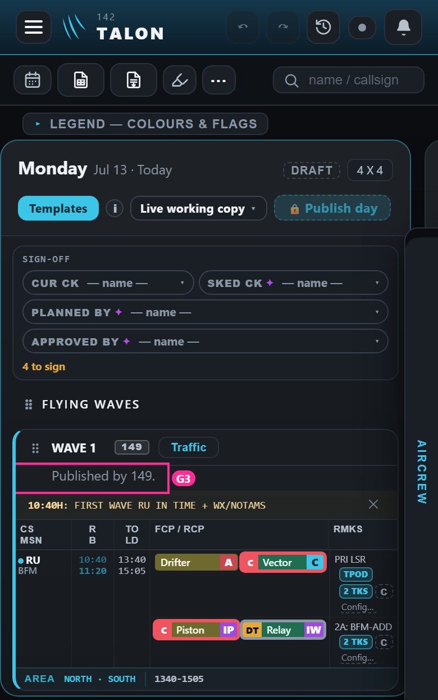
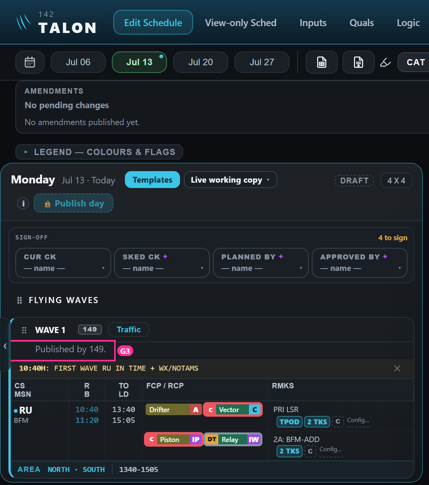
The sentence is in the same small grey letters as the day's date line ("Jul 13 · Today"): nothing new in size or colour. It fits on one line on the phone.
N · "+ Line" and the "3 new ↓" count
You chose: new lines at the foot of the wave, in the order made, and a "3 new ↓" count beside "+ Line". It shows only while a new line is out of view and goes once you have seen them all.
142's Scheduler Board. "+ Line" was really pressed three times: the app put the three blank lines at the wave's foot, in the order made, as it does today, each in the board's own blue "just added" ring. Only the count is drawn in, in the look of the head's own buttons. "+ Line" never moves. The passing note "Line added" is gone: the count does that job.
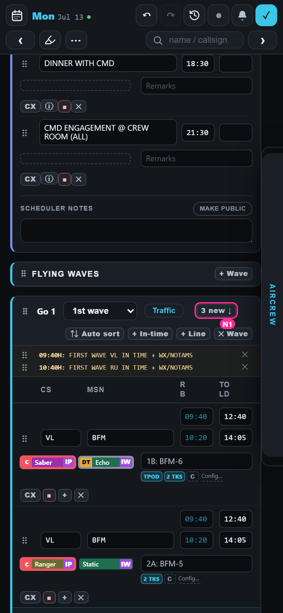
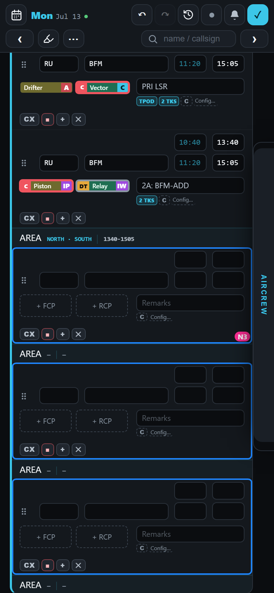
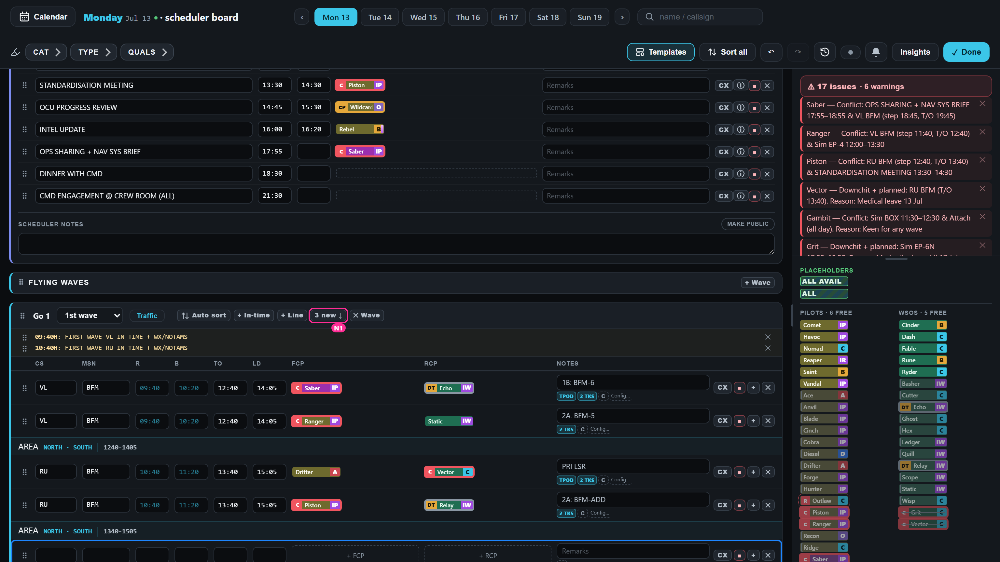
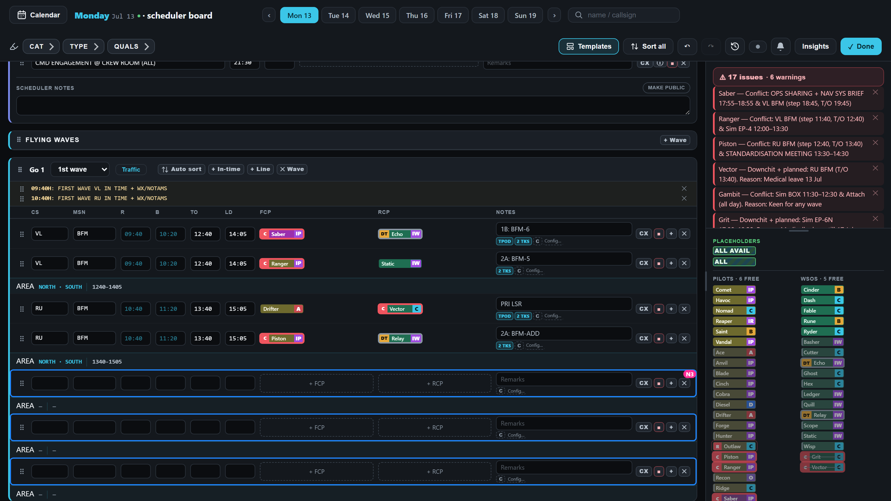
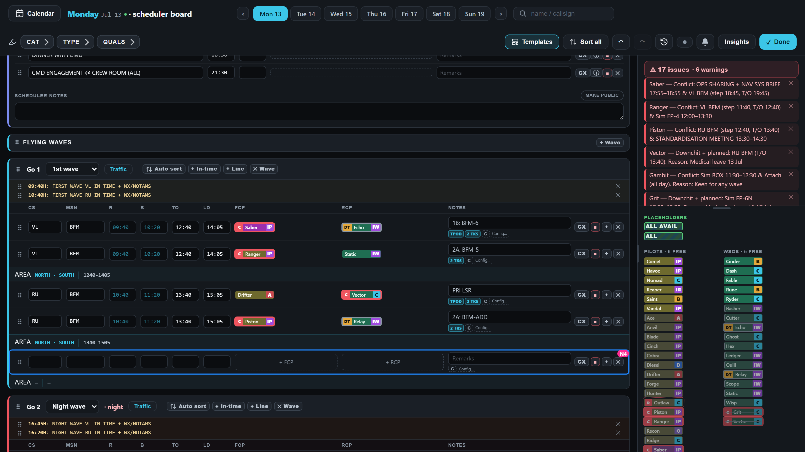
Keys: Tab reaches the count straight after "+ Line"; Enter does what a tap does, and since the count then goes, the keys move to the first new line's callsign box, ready to type.
N2 · Does the count count down as you scroll?
Example: you press "+ Line" three times, then scroll down by hand until the first new line is on screen. Recommended: the count now reads "2 new ↓", so its number always says how many are still below. The other way: it stays "3 new ↓" until all three have been seen.
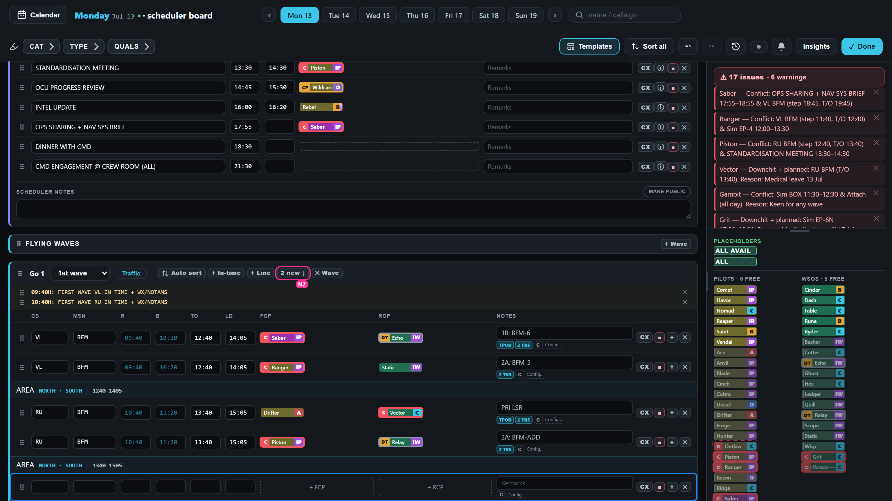
Found while drawing: on a phone this never shows. The wave is taller than the screen, so by the time a new line scrolls into view the wave's head, and the count with it, has gone off the top. On a phone the count is something you tap straight after pressing "+ Line"; on a desktop you can watch it count down.
N3 · The ring when you tap the count late
The blue "just added" ring lasts about six seconds. Example: you press "+ Line" three times, type somewhere else for a minute, then tap "3 new ↓". Recommended: the ring plays again on the three lines as they come into view, so you can see which lines are the new ones. The other way: they arrive with no ring, as plain blank lines at the foot.
Picture: the same as N1's "count tapped" pictures above; only the timing differs.
T · The "142" tag, lined up on the left
You asked: line the "142" tag up on the left, and should it show the same on a desktop and a phone?
Lined up: on the phone, round 4's tag sat about 10px in from "BFM", because it was centred in its column. Lined up, it starts exactly on the "B" of "BFM" (measured), so "RU", "BFM" and "142" read as one stack with one left edge. The blue dot before RU only marks a changed line, so it still hangs out on its own.
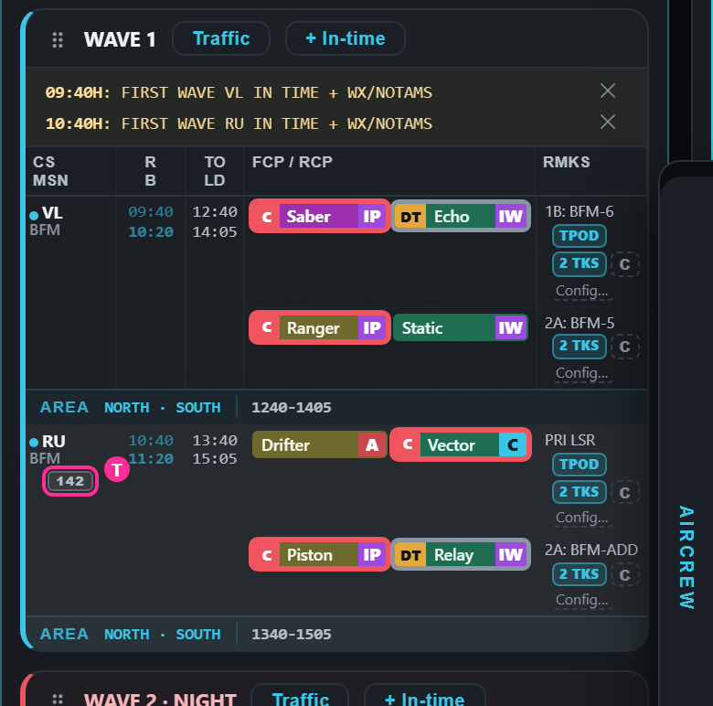

The same on a desktop? Recommended: yes. On a desktop the tag sits after the mission today ("BFM 142"), as round 2 ruled. Putting it under the mission there too means one look everywhere: the tag is always in the same place, just under whose line it marks, and a scheduler who moves between his PC and his phone never has to find it twice. It also follows your lesson that the same kind of row is drawn alike on a desktop and a phone.

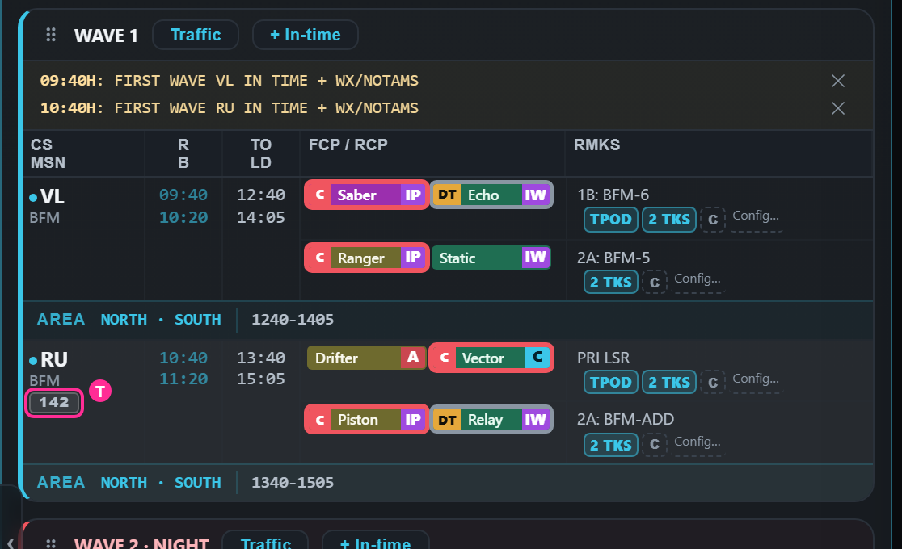
The one cost: a 142 formation of ONE jet grows 12px taller on a desktop (61px to 73px), because the tag needs a third line where that line has room for two. Formations of two or more jets cost nothing. On a phone nothing grows either way.
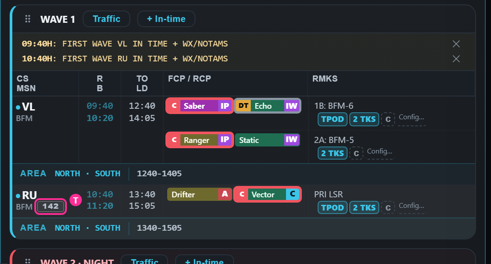

The Scheduler Board is a different screen made of boxes; its tag is round 4's item 1, on the callsign box's corner, the same on both devices.
J · "Join a 149 wave", as you approved it
142's Scheduler Board, "+ Wave" pressed (the menu is the real one). Each 149 wave is one row: its name, when it takes off and which formations are in it, so the waves are told apart by time. A wave 142 has already joined is greyed in the menu's own "can't press" look, with "joined" at its right. 142's own two waves stand in for 149's.
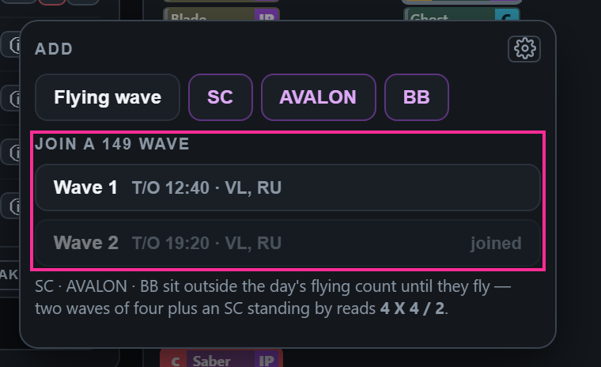

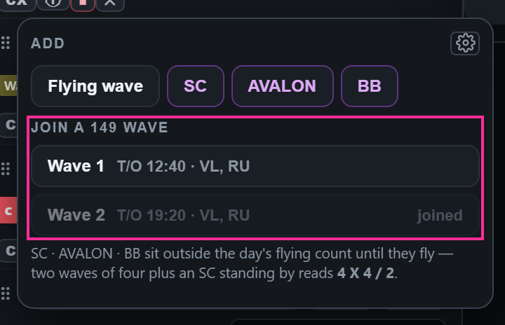